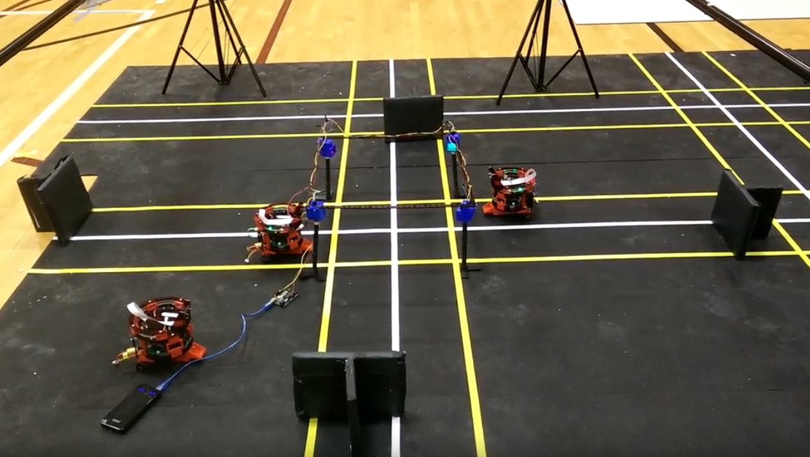

Self Driving Car Test Bed
About the Project
After reading about the Uber autonomous car accident in Tempe, AZ, I was thinking if these accidents could be emulated to study the interaction between human driven vehicles and autonomous vehicles. This thought took its form in the class Electric and Autonomous Vehicle as a class project. This later developed into my Master thesis where I constructed a miniature city and modified the Pheeno Robot to act as a Self driving car.
The test bed will make use of a fleet of robots which is a microcosm of an autonomous vehicle performing all the vital tasks like lane following, traffic signal obeying and collision avoidance with other vehicles on the road
Hardware used:

Skills Involved
- openCV in Python for real-time image processing
- C++ for real-time embedded control
- ROS
- Modelling and control algorithms
- IR/LIDAR data handling
- Machine perception
- Ad-HOC networking
- Wireless networking using TCP/IP protocols
- Gazebo
- Troubleshooting real robot hardware

Operation
This project is about developing an autonomous vehicle test bed which can be used to conduct studies on the interaction between human driven vehicles and autonomous vehicles on the road. The test bed will make use of a fleet of robots which is a microcosm of an autonomous vehicle performing all the vital tasks like lane following, traffic signal obeying and collision avoidance with other vehicles on the road.
The robots use real time image processing and closed loop control techniques to achieve automation. The test bed also features a manual control mode where a user can choose to control the car with a joystick by viewing a video relayed to the control station. Stochastic rogue vehicle processes will be introduced into the system which will emulate random behaviors in an autonomous vehicle. The test bed as experimented to perform a comparative study of driving capabilities of the miniature self driving car and a human driver.
The Project was divided into hardware and software section. Hardware section included the selection of the robot to be used and construction of the physical test bed and the software section included the sensing and control algorithms.

The software and the control is the major portion of the project. A kinematic model for the robot was obtained and a model for the motor was also obtained. The system used a PID control algorithm and took its feed back from the image systems.
The Image system captures the current frame and pipes it for detecting the lanes on the road first.Many operations including Smoothening, Color Ranging and lane detection algorithms are performed on the image to extract the lanes. With this estimate of the lanes an error is computed between the center of the lane and the center of the robot. This error is used to correct the robots position on the Road using the PID controller.
Other vehicles on the road were detected and avoided. The speed of the vehicle ahead was also estimated to efficently navigate without colliding. The robot was also programmed to classify traffic signs and would have equal probablity for turning in any direction in an intersection.
With all these features the robot behaved like a selfdriving car. To further add more features V2X communication was enabbled using AD-Hoc protocol. The intersections were modelled as a local host to the cars comming near them. An Unique protocol was designed where in each element in the system would identify itself to the other vehicles in the system. This communication methodology created a mesh that an user can monitor to know whats happening in the test bed.
Want to learn more? Check out my Thesis or send me an e-mail using the links below.